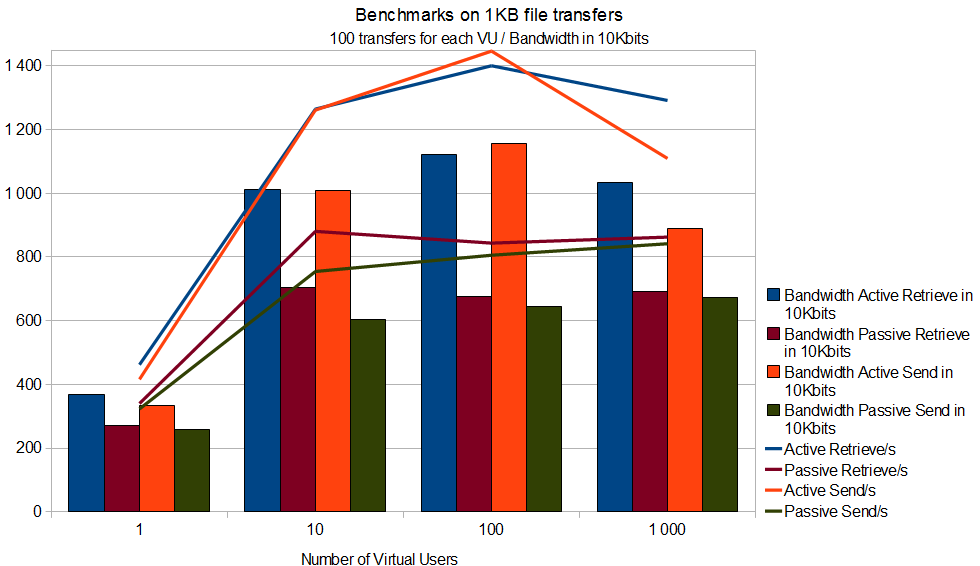
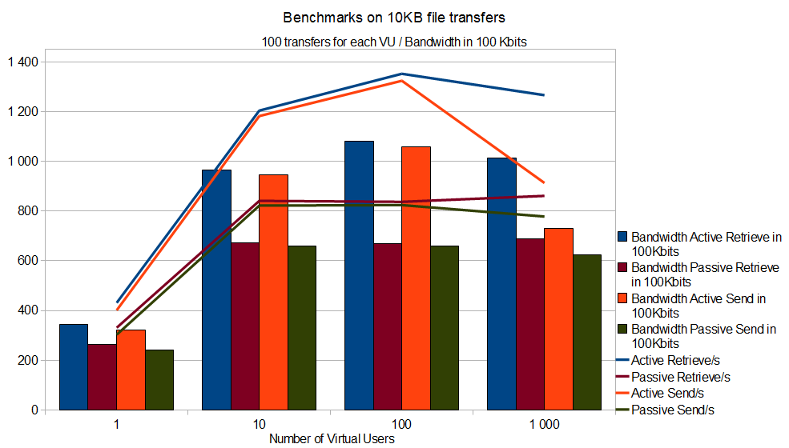
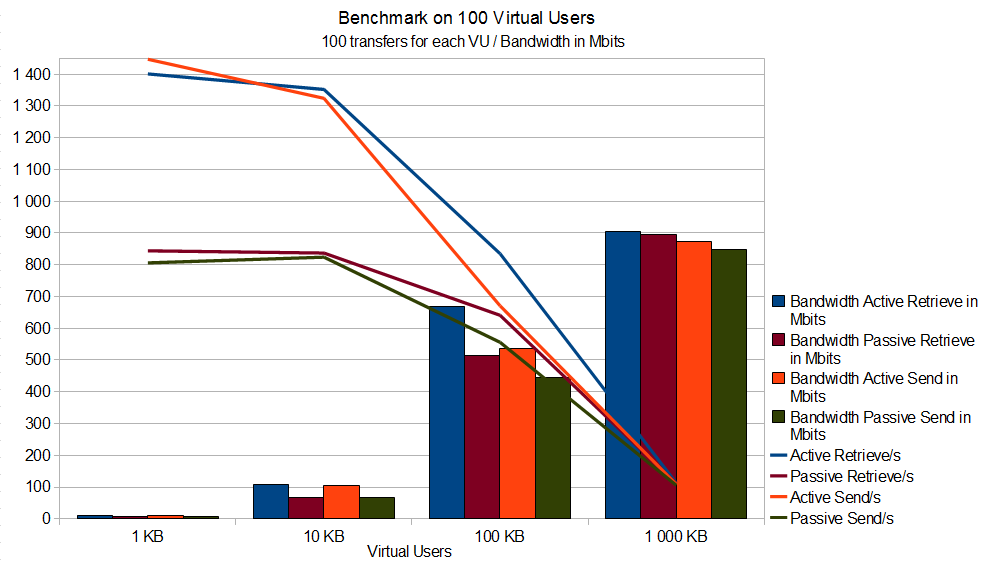

|
| ||||||||
|
|
BenchmarksFrom version 1.0.6 (2009), Benchmarks were done on 2 Intel Xeon Blade servers in one Blade Center. Each Blade is 2 Xeon Dual Core 1.66 Ghz with 4 GB of memory with a 1 Gb lan connection, one using as client simulator, the other one as server. Clients were realized using the Apache Net Ftp Client library.
All tests were done using the IBM JDK 1.6.
The first benchmark is about only Control Connection. It computes how many connections by second GoldenGateFtp server can allow, starting from 1 virtual user up to 1000 virtual users.
The result is on a single 2-Xeon server, the GoldenGateFtp Server allows up to almost 500 connections/second.
Connections Benchmark
The second benchmark is about transfer capacity on small files (1024 bytes only). Each user will try to transfer 100 times one file of 1024 bytes in one ways (store and retrieve), so that each virtual users will do 100 transfers operations sequentially. We start from 1 user up to 1000 users. We test both passive (client connect to the server for the data connection) and active (server connects to the client for the data connection) modes. 
The result is on a single 2-Xeon server, the GoldenGateFtp Server allows up to 1400 RETRieve by second in active mode and up to 900 RETRieve by second in passive mode with 100 virtual users. The difference is mainly due to the need in passive mode to made a special synchronization since the data connection will be initiated by the client on a port defined on the server, but as this port could be used by many clients at the same time, there are some extra check to correctly assign this data connection to the correct control connection.
In STORe like transfers, the result are generally a bit slower due to the disk contentions. In previous version, we observed a serious contention on write access due to JAVA way to write files using FileChannel or RandomAccessFile. We found out that FileOutputStream coupled with RandomAccessFile were the best result we can have, so this new version.
Note that on this benchmarks, Bandwidth are in 0.01Mbits (10Kbits) for graphical reasons, which means that a value of 400 means 4 Mbits, so we reach almost 11 Mbits. 
Note that on this benchmarks, Bandwidth are in 0.1Mbits (100Kbits) for graphical reasons, which means that a value of 400 means 40 Mbits. Here, as the files is bigger (10 KB), the transfers are not so immediate when we have 100 Virtual Users (VU), therefore the operations sustained almost 110 Mbits. But you can notice that with 1000 VU, the results are going down for the STORe operations, since this time concurrent writings can occurs more frequently due to the number of clients (around 70 Mbits maximum). However, for RETRieve operations, the number of transfers is still around 1400 transfers/s and now around 110 Mbits.
 The third benchmark is about the global bandwidth usage. Since with 100 users and 100 transfers in both ways we get the higher performance, we start from this set and increase the file size from 1024 bytes up to 1 024 000 bytes. The bandwitdh this time are in Mbits.
The result is on a single 2-Xeon server, the GoldenGateFtp Server allows to use up to 90% of the available bandwidth (here 0.9 Gb were used on a 1 Gb local network). Note that obviously the number of transfer/second is going down when the file size is going up. At 1024 bytes, we reached up to 1400 transfers/s. Again we can see the difference between Passive and Active protocol, and the disk write contention effect on STORe operations (around 850 Mbits at most on write).
Finally, a benchmark on GoldenGateFTP Exec was made using R66PreparedTransfer and Execute commands with the same conditions. The post execution limits the global performances since
|